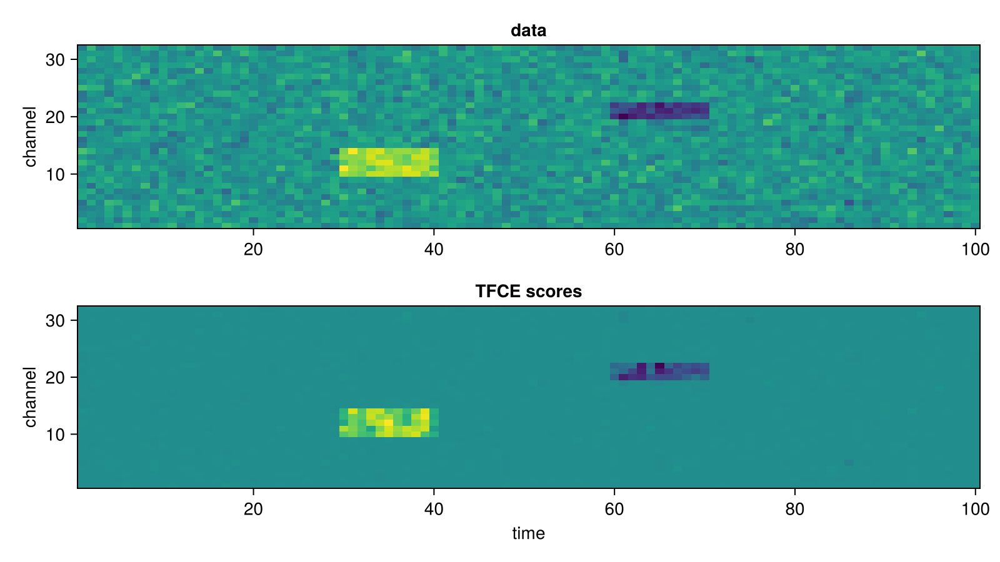
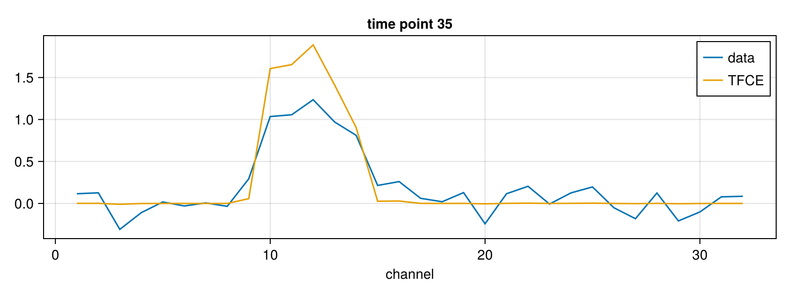

Tutorial
A short end-to-end example: simulate a few channels of noise with two planted clusters, run TFCE over them, and plot the result.
The package works on channels × times data (or channels × times × subjects, or a single channels vector) together with a channels × channels adjacency matrix that says which channels are neighbours. Every column of data is treated as an independent 1-D map over channels.
using ThresholdFreeClusterEnhancement
using CairoMakie
using LinearAlgebra, Random1. Simulate some data
32 channels × 100 time points of noise, plus one positive cluster (channels 10–14, time points 30–40) and one negative cluster (channels 20–22, time points 60–70):
rng = MersenneTwister(1)
n_channels, n_times = 32, 100
data = 0.2 .* randn(rng, n_channels, n_times) # noise
data[10:14, 30:40] .+= 1.0 # a positive cluster
data[20:22, 60:70] .-= 1.0 # a negative cluster
nothing2. An adjacency matrix
The simplest neighbourhood: every channel is connected to its immediate neighbours, i.e. a chain. Any symmetric AbstractMatrix works — 0/1, Bool, or weights, with a zero diagonal:
adjacency = diagm(1 => ones(n_channels - 1), -1 => ones(n_channels - 1))
nothing3. Run TFCE
scores = tfce(data, adjacency; E = 1, H = 2)
nothingE = 1, H = 2 is typical for channel/time-course data (E = 0.5, H = 2 is the volumetric default). two_sided = true (the default) enhances the positive and the negative part of each map, which is why the negative cluster below survives as a negative score instead of disappearing.
4. Plot it
fig = Figure(size = (800, 450))
ax1 = Axis(fig[1, 1]; title = "data", ylabel = "channel")
heatmap!(ax1, data')
ax2 = Axis(fig[2, 1]; title = "TFCE scores", xlabel = "time", ylabel = "channel")
heatmap!(ax2, scores')
fig
The noise is suppressed to almost zero while both clusters survive — with their support spread along the time and channel dimensions that the adjacency connects. That is what TFCE does: each element's score is its cluster-extent support integrated over thresholds, so isolated noise bumps stay small and joint bumps grow.
For a single time point, the TFCE curve is the data curve re-weighted by how much cluster support each channel has:
fig = Figure(size = (800, 300))
ax = Axis(fig[1, 1]; title = "time point 35", xlabel = "channel")
lines!(ax, data[:, 35]; label = "data")
lines!(ax, scores[:, 35]; label = "TFCE")
axislegend(ax; position = :rt)
fig
Where to go next
?tfcefor all keyword arguments (E,H,two_sided,nthreads,sortalg), andtfcefor the full docstring.permutation_testfor a one-sample sign-flip permutation test of a TFCE score map: the per-element one-sample t as the statistic, TFCE as the spatial statistic, returning FWE-corrected and uncorrected p-value maps (channels × times).- the API reference for everything else.